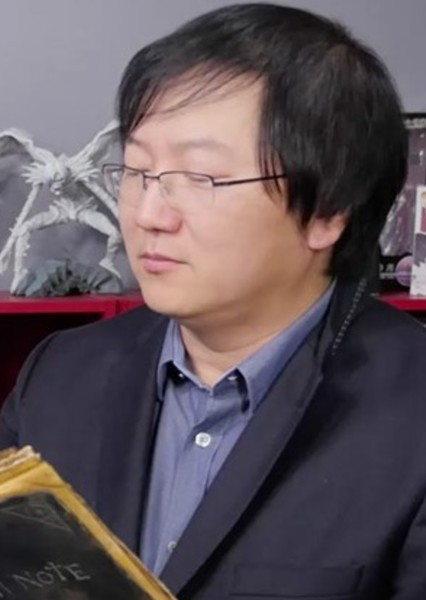

Death Note
La serie sigue la historia de Light Yagami, un estudiante de secundaria que encuentra un cuaderno que le permite matar a cualquier persona cuyo nombre escriba en él, mientras intenta usarlo para "limpiar" el mundo de la maldad y convertirse en el dios del nuevo mundo.
Precio: €9.99
Death Note es un manga japonés escrito por Tsugumi Ohba e ilustrado por Takeshi Obata. Se serializó en la revista Weekly Shonen Jump de Shueisha desde diciembre de 2003 hasta mayo de 2006, con los capítulos individuales recopilados y publicados en volúmenes de tankobon por la misma editorial.
Información del Autor
Tsugumi Ohba es un seudónimo utilizado por el escritor de manga japonés cuya verdadera identidad es desconocida. Ohba es más conocido por ser el autor de "Death Note" y "Bakuman", dos de las series de manga más populares de la última década.
Takeshi Obata es un mangaka japonés nacido el 11 de febrero de 1969 en la prefectura de Niigata, Japón. Es más conocido por ser el ilustrador de "Death Note" y "Bakuman", trabajando en colaboración con el escritor Tsugumi Ohba.
En resumen, Tsugumi Ohba y Takeshi Obata son un equipo creativo altamente exitoso cuyo trabajo en "Death Note" ha dejado una marca indeleble en la industria del manga y el anime. Su habilidad para crear historias emocionantes y personajes memorables los ha convertido en algunos de los autores más reconocidos y admirados en el mundo del manga.
Arcos Principales
| Arco | Descripción | Capítulos |
|---|---|---|
| Arco de la Introducción | Light Yagami encuentra el Death Note y comienza a usarlo para eliminar a criminales y establecer su propio sentido de justicia. | 1-7 |
| Arco del Detective L | Light se enfrenta al famoso detective L, quien está decidido a atrapar al asesino en serie conocido como "Kira". | 8-26 |
| Arco de Yotsuba | Light y L investigan a la corporación Yotsuba mientras compiten entre sí por descubrir la verdadera identidad de "Kira". | 27-58 |
| Arco del Nuevo Mundo | Después de la muerte de L, Near y Mello emergen como nuevos rivales de Light en la batalla por el control del Death Note. | 59-108 |